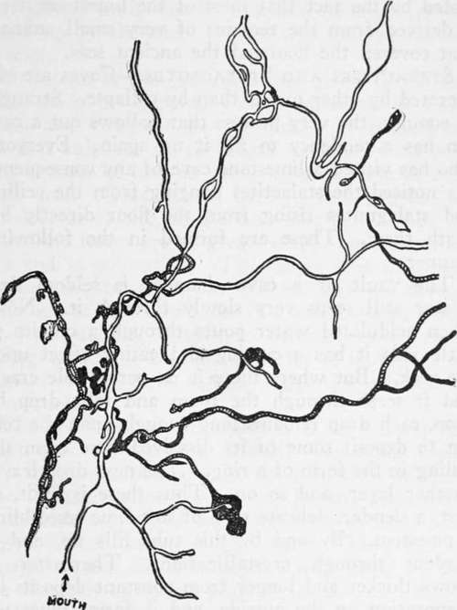

Cave Exploration. Part 3
Description
This section is from the book "Camping And Woodcraft", by Horace Kephart. Also available from Amazon: Camping and Woodcraft.
Cave Exploration. Part 3
"Eldon Hole ... is a famous Dit in the Peak of Derbyshire, about which Hobbes wrote in Latin and Cotton in English. The latter thus testifies in verse:
" 'I myself, with half the Peak surrounded, Eight hundred, four score and four yards have sounded;
And though of these four score turned back wet, The plummet drew and found no bottom yet!'
"In other words, the poet's measurement found no bottom at the astonishing depth of 2,652 feet?. Probably Mr. Cotton let the rope coil on the bottom, mistaking the weight of it for that of the plummet—a mistake actually made by a civil engineer in Kentucky, who reported a pit to be 300 feet deep, which afterward was proved to be but 90 feet. Concerning the Eldon Hole, it is further stated that the Earl of Leicester hired a man to descend, who, after going down 750 feet, was drawn up a raving maniac, and died in eight days. Very likely he imitated the Knight of La Mancha, when in the Spanish cave, who ensconced himself on a convenient shelf, and let the rope dangle as far as it might below, while he dreamed the rest of the adventure. At all events when Mr. Lloyd, a member of the Royal Society, took it in hand to sound the bottom of the Eldon Hole, he found it at the exact depth of 186 feet, and told the story in the Transactions of the Society".
When the roof at both ends of a cavern chamber drops in, leaving the central arch intact, the re* suit is a "natural bridge," such as the noted one in Rockbridge County, Virginia, the lower face of which is 160 feet, and the upper surface 215 feet above the water of Cedar Creek. Larger ones are found in other localities.
When both ends of a cavern gallery or long corridor fall in, and the bridge thus formed is very wide, we have a "natural tunnel." I know of one on a fork of the Current River in Missouri, where the stream pierces a mountain ridge. Near the Clinch River, in Virginia, a creek flows through a great arch for more than half a mile. In Mammoth Cave there is an arcade 4,000 feet long, 100 feet wide, and 45 feet high. If both ends of this hall should fall in there would be another of these natural tunnels.
Fig. 189. Map of a part of the Mammoth Cave (shaded parts are at low level).
At first sight it seems incredible that such vast excavations could be made by chemical action and erosion. And yet there have been greater ones in former caverns that kept on hollowing out the rock until their roofs could no longer stand the strain.
The debris then being disintegrated and washed away, there remain no traces of the old caverns except ravines or valleys that originally were arched over and were wholly underground. The part that minute agencies and gentle but persistent forces play in building up and reshaping the earth is illus-tiated by the fact that most of the limestone itself is derived from the remains of very small animals that covered the floors of the ancient seas.
Stalactites And Stalagmites
Caves are obliterated by other means than by collapse. Strangely enough, the very process that hollows out a cavern has a tendency to fill it up again. Everyone who has visited a limestone cave of any consequence has noticed the stalactites hanging from the ceiling and stalagmites rising from the floor directly beneath them. These are formed in the following manner:
The vault of a cave chamber is seldom dry. Water still seeps very slowly through it. Now, when acidulated water pours through a crevice in little rills it has a cutting and eating effect upon the rock. But where there is no perceptible crack, and it seeps through the room and falls drop by drop, each drop remains long enough upon the ceiling to deposit some of its dissolved lime upon the ceiling in the form of a ring. The next drop leaves another layer, and so on. Thus there is built, at first, a slender, delicate tube of soft lime resembling a pipestem. By and by this tube fills up, and it hardens through crystallization. Thereafter it grows thicker and longer from constant deposits by evaporation on the outside, and it forms what we call a stalactite.
Meantime all those drops that did not evaporate wholly on the ceiling leave the rest of their lime at the points where they strike the floor. Thus there grow upward a series of mamillary concretions or stalagmites rising higher and higher toward the long pendants overhead. In time a stalactite and a stalagmite will join, forming a pillar. If the seepage from above exudes chiefly through a long fissure, the dripstone will join along- this line into a solid partition. In this way small chambers are formed out of large ones, passages are obstructed, defiles are closed, ceilings and floors grow toward each other, until finally a whole cavern may be closed up by the same process that started its excavation.
Dripstone is the general name given to all deposits made by dripping water, regardless of their forms and composition. Originally it is nothing but soft sulphate or carbonate of lime, with perhaps a trace of iron or other metal soluble in carbonic acid. Gradually it hardens into gypsum or alabaster or calcite, as the case may be. Often its crystalline forms are of great beauty, both in structure and in coloration. The shapes that dripstone assumes in stalactites, in pillars, and on cavern walls, are as varied as those in a kaleidoscope, ranging from delicate filigree to baronial ruins, from boiling springs or cascades of water to imitations of animals or grotesque figures suggesting phantasms of mythology.
The thickness of dripstone is a very uncertain measure of the age of a deposit. Limestone rocks vary in composition and in the solubility of their lime. Underground waters vary in their percentage of carbonic acid, from weak solutions to those that effervesce and have an acid taste. The rate of seepage varies. So a stalagmite may grow at the rate of nearly an inch a year, for a time, and afterward less than that in ten or twenty or fifty years.
Continue to: